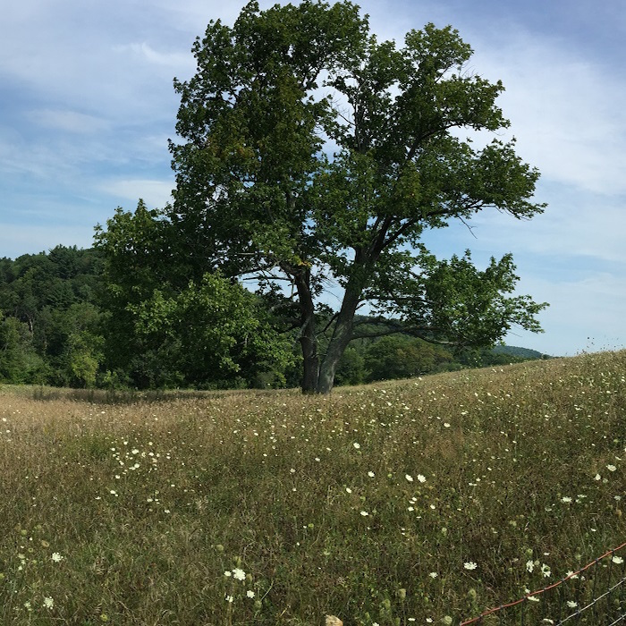
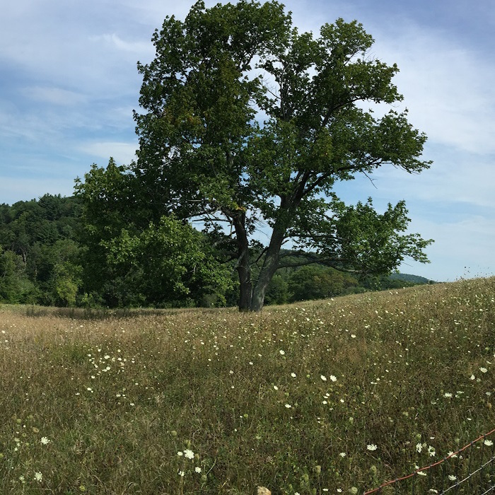

The Gibbet Hill walk is short, but steep. The walk up the hill takes less than 10 minutes with wonderful views at the top past the castle.
There is limited street parking. Please consider other locations for your fall walk during peak weekends in November, because it may be too crowded.
This is an enchanting walk up to a castle of stone and views that stretch for miles. After a quick climb up the hill an old burned down castle emerges. The castle is framed by seemingly ancient trees and a grassy hilltop. The castle is a wonderful place to have a picnic and watch the sunset, because there are places to sit and lots of shade. Shortly after the castle is a captivating westward view. The view looks across the lush green fields that fade into a forest of green in the spring and a fiery array in the fall. This view captivates the onlooker as houses, that seem to be painted on, peek through the trees. While standing at this lookout, the walker can watch the wind make the lush forest come alive and dance in a enthralling tapestry of colors. The truly picturesque lookout point on top of Gibbet Hill can truly be appreciated by all.


 
